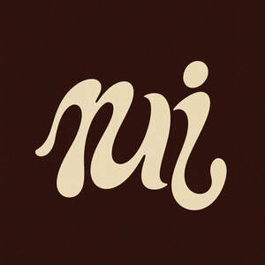

Trade Mark Journal No.2025/049 5 December 2025
UK00004300738 25 November 2025 (14)
Mark 1

Mark 2
- Class 14
- Jewellery; Jewellery (Paste -); Jewellery articles; Jewellery items; Jewellery products; Pendants [jewellery]; Wristlets [jewellery]; Costume jewellery; Jewellery chains; Jewellery chain; Imitation jewellery; Artificial jewellery; Fake jewellery; Enamelled jewellery; Fashion jewellery; Alloys of precious metal; Alloys of precious metals; Articles of jewellery; Articles of jewellery coated with precious metals; Articles of jewellery made from rope chain; Articles of jewellery made of precious metal alloys; Articles of jewellery made of precious metals; Articles of jewellery with precious stones; Artificial gemstones; Artificial gem stones; Articles of jewellery with ornamental stones; Bangle bracelets; Bangles; Body jewellery; Body-piercing rings; Body-piercing studs; Body costume jewellery; Bracelet charms; Bracelets; Bracelets [jewellery]; Bracelets [jewellery, jewelry (Am.)]; Bracelets [jewelry]; Bracelets of precious metal; Chains [jewellery]; Chains [jewellery, jewelry (Am.)]; Chains [jewelry]; Chains made of precious metals [jewellery]; Chains of precious metals; Charms; Charms for jewellery; Charms for jewelry; Charms [jewellery]; Charms [jewellery] of common metals; Charms [jewelry]; Charms [jewellery, jewelry (Am.)]; Choker necklaces; Chokers; Crystal jewelry; Cut diamonds; Diamond jewelry; Diamond [unwrought]; Diamonds; Drop earrings; Ear ornaments in the nature of jewellery; Ear studs; Earrings; Earrings made of precious metal; Earrings of precious metal; Eternity rings; Engagement rings; Finger rings; Gemstones, pearls and precious metals, and imitations thereof; Gemstones; Gems; Friendship rings; Friendship bracelets; Gold; Gold bracelets; Gold chains; Gold earrings; Gold jewellery; Gold necklaces; Gold plated bracelets; Gold plated chains; Gold plated earrings; Gold-plated earrings; Gold-plated necklaces; Gold plated rings; Gold-plated rings; Gold rings; Gold thread [jewellery]; Gold thread [jewellery, jewelry (Am.)]; Gold thread jewelry; Gold thread [jewelry]; Gold, unworked or semi-worked; Gold, unwrought or beaten; Hoop earrings; Imitation jewelry; Imitation precious stones; Items of jewellery; Jewel chains; Jewel pendants; Jewellery being articles of precious metals; Jewellery being articles of precious stones; Jewellery chain of precious metal for bracelets; Jewellery chain of precious metal for anklets; Jewellery chain of precious metal for necklaces; Jewellery charms; Jewellery coated with precious metal alloys; Jewellery coated with precious metals; Jewellery containing gold; Jewellery fashioned from bronze; Jewellery fashioned from non-precious metals; Jewellery fashioned of cultured pearls; Jewellery fashioned of precious metals; Jewellery fashioned of semi-precious stones; Jewellery for personal adornment; Jewellery for personal wear; Jewellery in non-precious metals; Jewellery in precious metals; Jewellery in semi-precious metals; Jewellery in the form of beads; Jewellery, including imitation jewellery and plastic jewellery; Jewellery incorporating diamonds; Jewellery incorporating pearls; Jewellery incorporating precious stones; Jewellery made from gold; Jewellery made from silver; Jewellery made of bronze; Jewellery made of crystal; Jewellery made of crystal coated with precious metals; Jewellery made of non-precious metal; Jewellery made of plated precious metals; Jewellery made of precious stones; Jewellery made of precious metals; Jewellery made of semi-precious materials; Jewellery of precious metals; Jewellery plated with precious metals; Jewellery rope chain for bracelets; Jewellery rope chain for necklaces; Jewellery stones; Jewellry; Jewelry; Jewels; Lockets [jewellery]; Lockets [jewellery, jewelry (Am.)]; Lockets [jewelry]; Man-made pearls; Neck chains; Necklaces; Necklace charms; Necklaces [jewellery]; Necklaces [jewellery, jewelry (Am.)]; Necklaces [jewelry]; Necklaces of precious metal; Natural gem stones; Natural pearls; Pendants [jewelry]; Pendants; Pearls; Pearl; Pearls [jewellery]; Pearls [jewellery, jewelry (Am.)]; Pearls [jewelry]; Personal jewellery; Platinum jewelry; Platinum rings; Precious jewellery; Precious gemstones; Precious jewels; Precious and semi-precious stones; Precious and semi-precious gems; Ring bands [jewellery]; Ring holders of precious metal; Rings being jewellery; Rings coated with precious metals; Rings [jewellery]; Rings [jewellery, jewelry (Am.)]; Rings [jewellery] made of non-precious metal; Rings [jewellery] made of precious metal; Rings [jewelry]; Rings of precious metal; Rings [trinket]; Rope chain [jewellery] made of common metal; Rope chain made of precious metal; Semi-finished articles of precious metals for use in the manufacture of jewellery; Semi-finished articles of precious stones for use in the manufacture of jewellery; Signet rings; Silver; Semi-precious gemstones; Semi-precious stones; Silver bracelets; Silver earrings; Silver necklaces; Silver-plated bracelets; Silver-plated earrings; Silver-plated necklaces; Silver-plated rings; Silver rings; Silver thread; Silver thread [jewellery]; Silver thread [jewellery, jewelry (Am.)]; Silver thread [jewelry]; Silver, unwrought or beaten; Sterling silver jewellery; Sterling silver jewelry; Synthetic precious stones; Synthetic stones [jewellery]; Threads of precious metal [jewellery, jewelry (Am.)]; Threads of precious metal [jewellery]; Threads of precious metal [jewelry]; Wedding bands; Wedding rings; Women's jewelry.
GROWN LTD
Representative: Hoffmann Eitle Patent- und Rechtsanwälte PartmbB